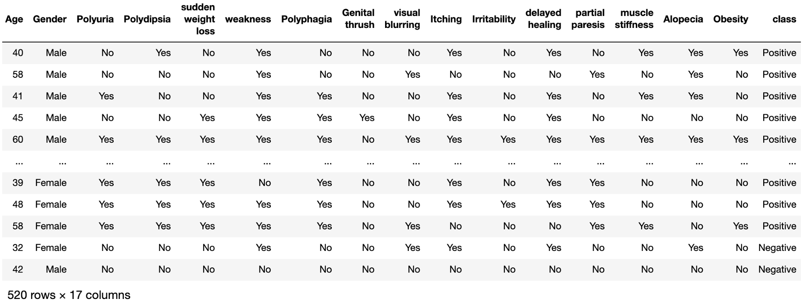

Diabetes, a chronic metabolic disorder, is one of the fastest growing diseases regardless of geographic,
racial, or ethnic context. There are two types of disbetes: Type I and Type II.
Type I diabetes happens when the pancreatic beta cells produce either very little insulin or no insulin.
Type II dibetes happens when the body becomes insulin resistant.
The common symptoms for Type I diabetes are sudden weight loss, dehydration, delayed healing,
blurred vision and Type II have similar symptoms or no symptoms at all depending on each body's idiosyncratic
reactions. [1, 2]. Type I diabetes strikes both kids and adults at any age, while Type II diabetes is generally
seen later in life. There is no cure for diabetes but it can be managed if it is diagnosed in the early stages.
Type I diabetes can be managed by medication such as insulin and Type II can be managed via a balanced diet,
excercise and a healthy lifestyle. In this project, we will be dealing exclusively with data about Type II
diabetic patients.
Description of Dataset
The dataset contains a record of 16 attributes about each of 520 patients, which may be correlated with
their diabetic status, or "class". The data is entered as either "Yes" or "No" for each of the 14 health
related factors, and is entered as "Positive" or "Negative" in its classification of whether or not the
individual patient (represented by a single row) has diabetes. The data was collected from the patients in
the Sylhet Diabetes Hospital of Sylhet, Bangladesh.

Questions to Consider
To what extent can a machine-learning model predict whether or not a patient is at risk of diabetes based on 16 different health and demographic attributes?
Is such a model useful for classifying patients in a clinical setting so that preventative and if nescessary, therapeutic measures may be implemented?